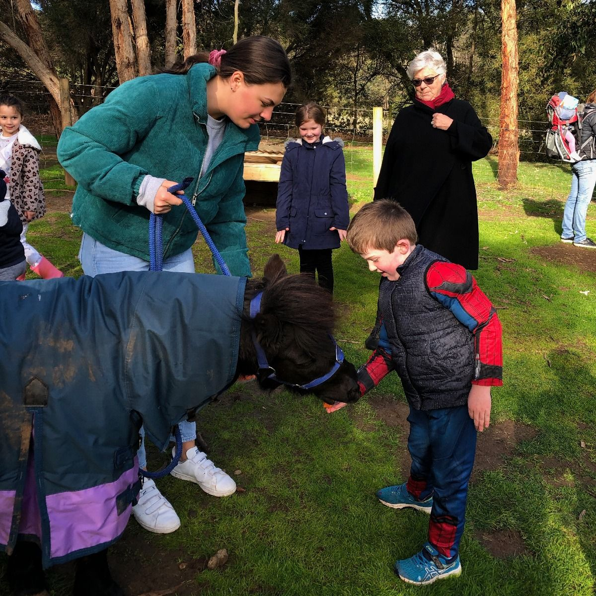
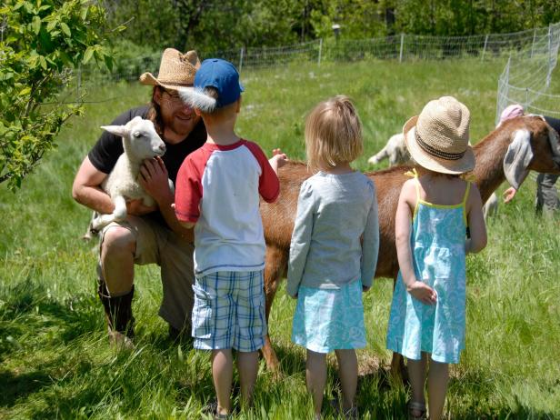
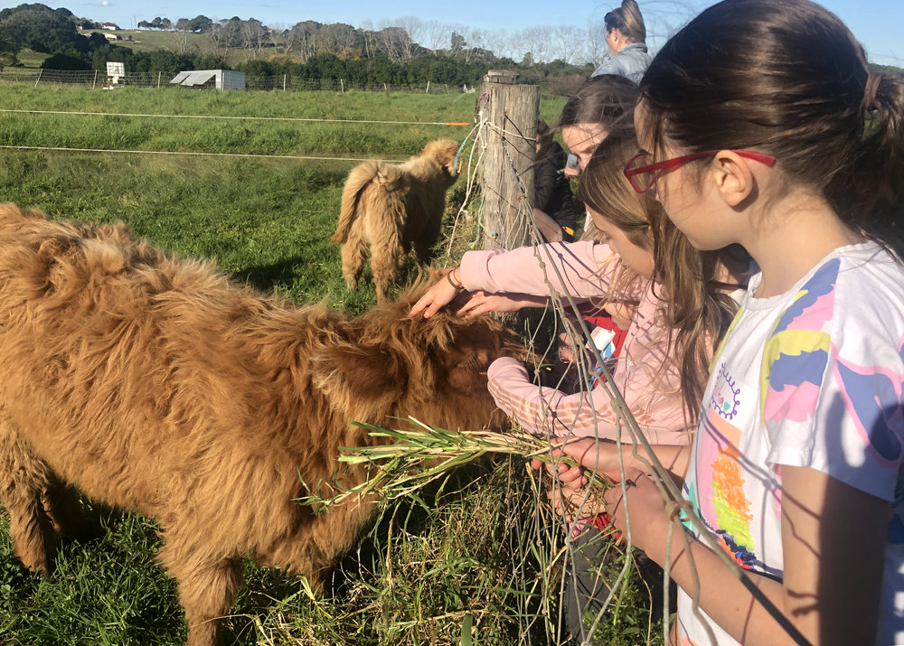
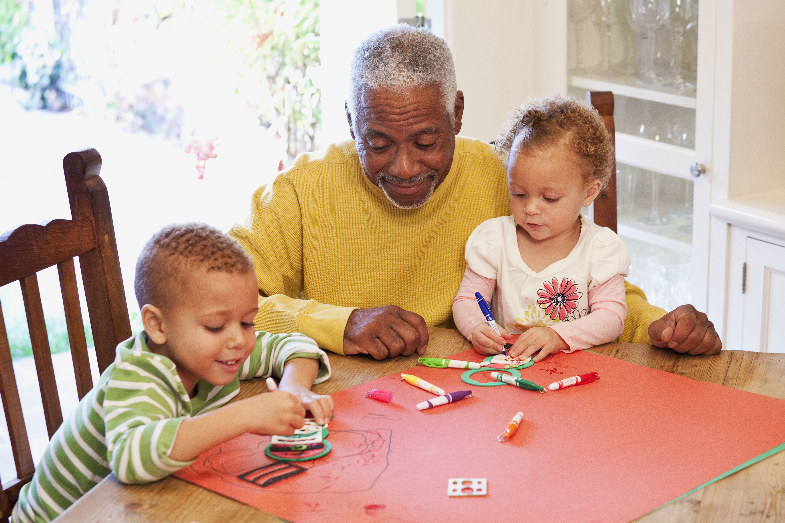

¡Hicimos un paseo a la chacra!
Con este paseo, además de fomentar la salud y el desarrollo de los niños, ayudamos a fomentar relaciones seguras, estables, provechosas, que protegen contra el estrés tóxico y generan la resiliencia socio emocional. No fue solamente diferente sino también una vivencia con mucha alegría y armonía.



¡Festejamos el dia del abuelo!
El Día de los Abuelos o Día del Abuelo es un día conmemorativo dedicado a las personas mayores dentro de la familia, que complementa al Día de la Madre y al Día del Padre. Esta jornada se celebra solo en algunos países, con diferencias en la denominación, motivación y fecha.

¡Fuimos a un museo!
Es bueno que los niños a partir de los tres años se acostumbren a visitar museos. Además de ser muy educativo, será un plan muy entretenido para hacer los fines de semana.
Si lo propones como un paseo divertido al niño le encantará y no lo verá como algo impuesto y aburrido.
Hoy en día hay museos muy atractivos para niños pequeños, con múltiples actividades y actualizados, como por ejemplo los museos de Ciencias Naturales o el Museo del Ferrocarril, exposiciones del espacio, el Planetario…
Explícale al niño en todo momento lo que está viendo y participa con él en los talleres y actividades que se proponen.
No alargues demasiado la visita para que no se le haga muy pesado el paseo y para que otro día tenga ganas de volver.